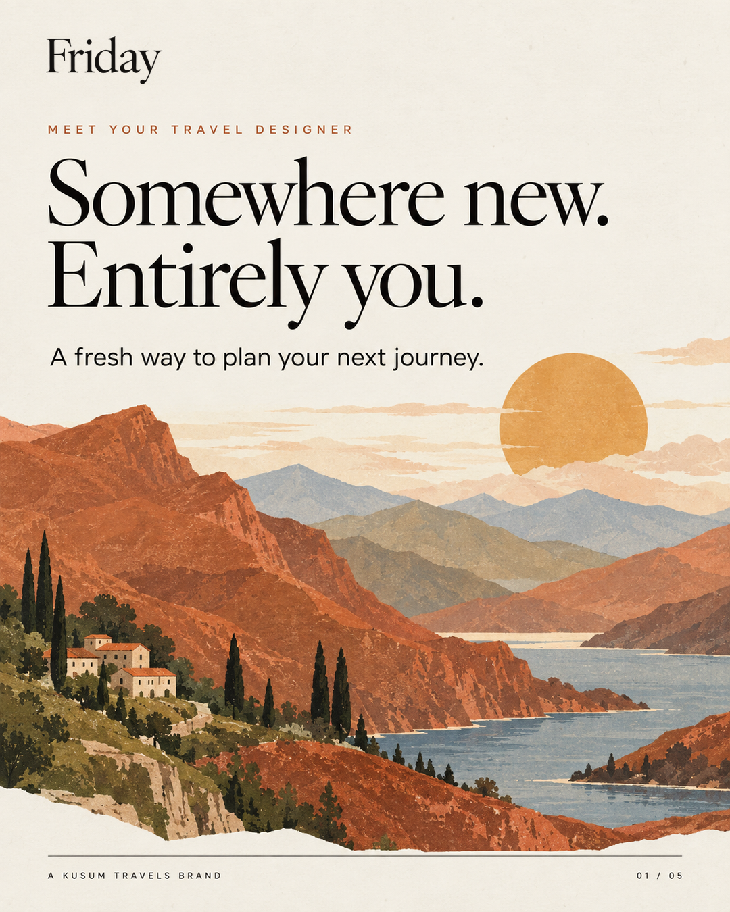
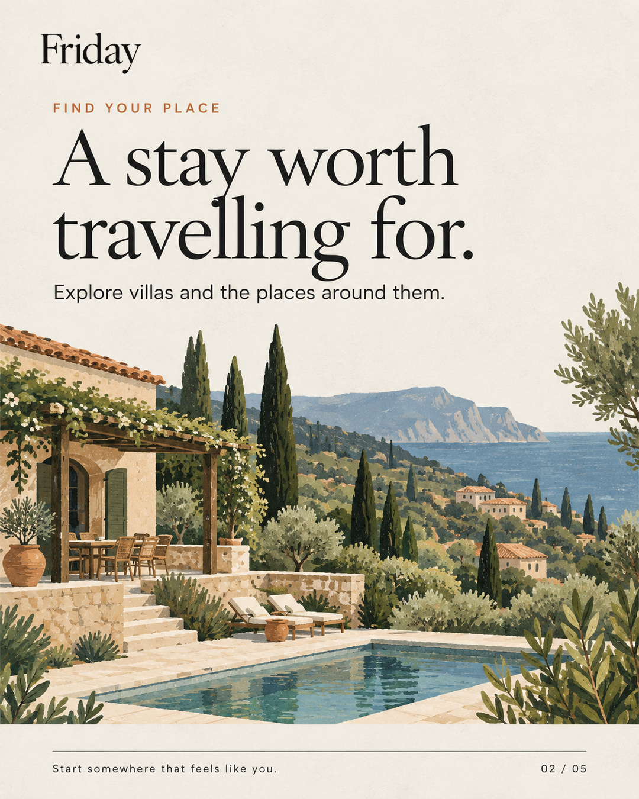
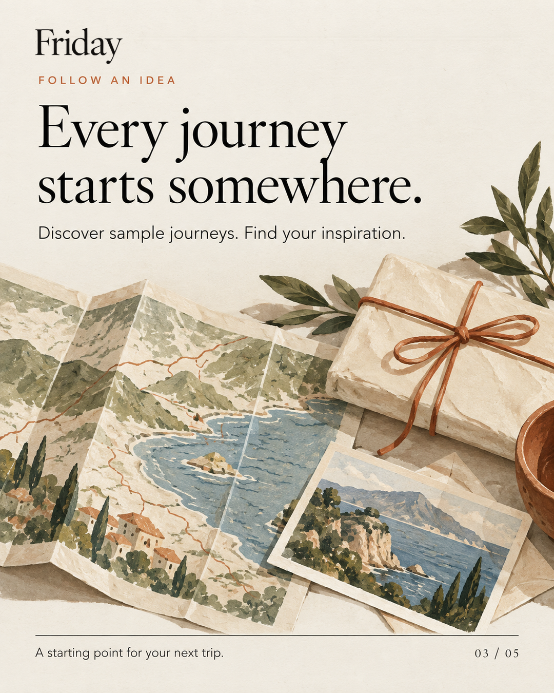
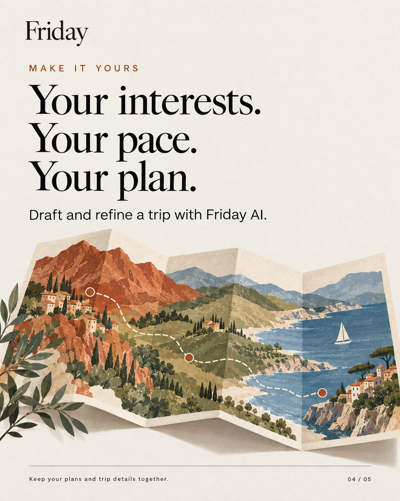
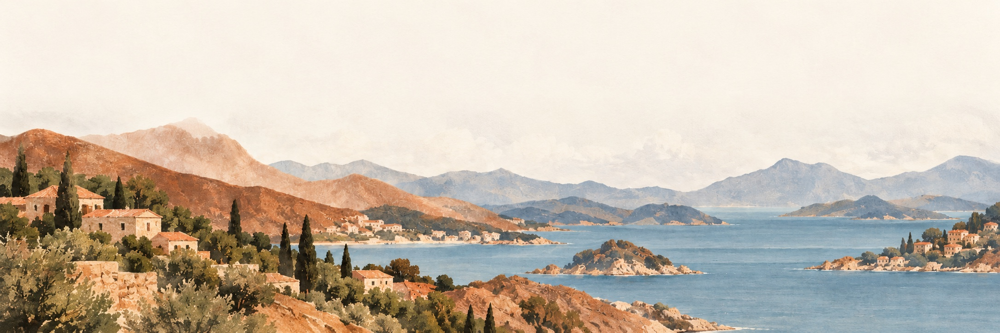

Leave room to dream.
Wide margins, generous section spacing and clear hierarchy give each destination room to breathe.
Design guide · October 2026
A working reference for Friday’s website, planner and launch artwork. The brand feels like an invitation into a well considered journey: editorial, warm, spacious and quietly confident.
01 / Direction
Think of a travel journal laid out with the care of a gallery catalogue. Let a strong image and a small amount of precise language do the work.
Wide margins, generous section spacing and clear hierarchy give each destination room to breathe.
Warm paper, fine rules, cut paper forms and subtle grain create the tactile character.
Near black type anchors the page. Terracotta is an accent, used with intention.
02 / Wordmark
Set “Friday” as serif text in Cormorant Garamond, medium weight, with close spacing. Use the same wordmark in the top header, the planner and brand communications.
Primary on warm paper
Reversed on deep ink
Keep the name legible and unadorned. Do not replace it with a symbol, use a different logo on scroll, or stretch the letterforms. The website header specifies font-weight:500, font-size:1.85rem and letter-spacing:-.03em.
03 / Colour
A small core palette carries the interface. The planner’s destination and activity colours are supporting cues, not replacements for the brand palette.
#F4F1EA#EDE8DD#E3DCCD#15140F#2A2820#B0552D#9A7C41#4A473DSupporting muted text: #7E7869. On dark sections, use Paper for primary text and warmer, lighter muted text. Terracotta remains a small accent.
04 / Typography
Cormorant Garamond gives Friday its literary voice. Inter keeps directions, navigation, forms and trip details crisp.
Website source sizes: hero clamp(3.2rem, 12.2vw, 11rem); display 1 clamp(2.5rem, 6.4vw, 5.4rem); lede clamp(1.1rem, 1.55vw, 1.45rem); labels .6875rem with .245em tracking.
05 / Image language
Friday’s illustration language combines layered landscapes, a glowing sun or moon, muted natural colour and the feel of a printed plate. Use clean shapes with fine texture, not crowded detail.


Website art is displayed in a “plate”: a subtle grain layer, an inner hairline and a soft halftone bloom. Common crops are 4:5, 16:10, 1:1 and 21:9. Preserve the focal subject when adapting aspect ratio.
06 / Instagram launch
The five final carousel slides show the brand in motion: an editorial headline above an illustrated travel scene, with a consistent Friday wordmark, generous margins and a quiet footer.




Composition
Portrait 4:5 export at 1080 × 1350. The series uses a cream text field above a textured illustration. Keep type readable with broad safe margins and use a small page number for sequence.
Assets
Final delivery: carousel-final-v2.zip
Individual slides: carousel-final-v2/
Caption: caption.txt
07 / Trip artwork
The planner is served as trip.html in this project. Its start screen has a coastal backdrop. The folded map is the artwork used for the trip planning offer on the main website. Keep both in the reference set.

Planner start screen · assets/images/friday-coastal-backdrop.jpg
The opening scene
The coastal illustration sits at the bottom of the planner’s pale canvas, leaving the upper area clear for the greeting and prompt. This keeps the app useful while retaining the travel mood.
#F6F3EDTrip planning offer · assets/illustrations/friday-folded-itinerary-map.svg
The journey motif
The folded map, route and selected stops make planning feel personal and tangible. It belongs with the site’s other illustrated offering cards, in their existing crop and plate treatment.
08 / Application
The website and planner share a brand, while each has a different job. Preserve the established layouts and use these rules when extending them.
Use large serif statements, fine dividing rules, warm paper, spacious grids and art led cards. Buttons are small uppercase pills with restrained interaction.
Keep the imported planner screens and behavior. Use the same Friday serif wordmark and core palette, with clear sans serif controls and legible trip details.
Use the finished carousel as the visual precedent: 4:5 editorial layouts, simple copy, consistent margins and textured travel illustration.